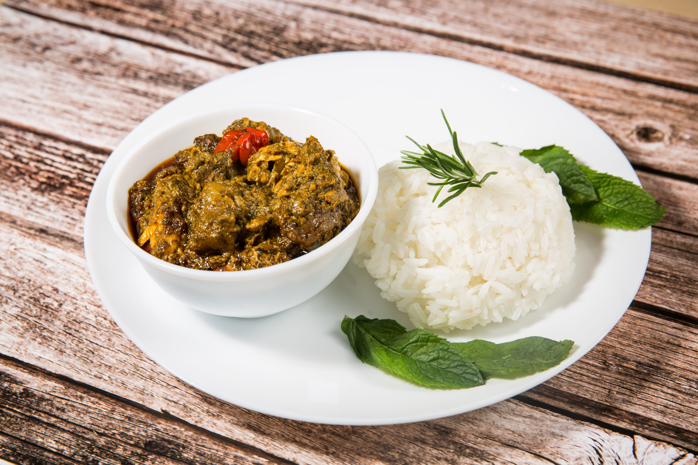

Le Mataba
C’est le pilier de la table mahoraise. Le mataba est un ragoût doux et onctueux préparé à base de jeunes feuilles de manioc finement pilées au pilon traditionnel, puis mijotées de longues heures dans du lait de coco frais.
Ce plat convivial se distingue par sa texture veloutée et son parfum unique apporté par les épices de l'île (ail, gingembre, curcuma).
Le secret de sa préparation
La sélection des feuilles de manioc demande un lavage minutieux avant d'être pilées. On y ajoute le lait de coco qui apporte la douceur indispensable pour équilibrer le goût végétal de la feuille. Selon les familles et les occasions, le mataba est agrémenté de poisson frais, fumé, de crevettes ou parfois de viande.
Il est traditionnellement servi fumant, accompagné de riz blanc, de manioc bouilli ou de bananes vertes pour absorber cette sauce savoureuse.